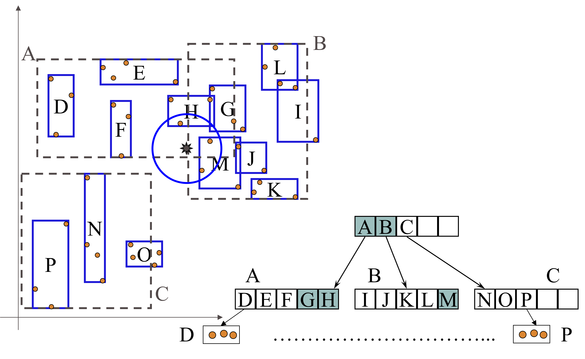

Machine Learning and Data Mining (Module 2)
K-nearest neighbors
Matteo Francia
DISI — University of Bologna
m.francia@unibo.it
K-nearest neighbors
K-nearest neighbors do not build models but classify new records based on their similarity to the examples in the training set.
They are called lazy-diligent learners as opposed to eager-diligent, impatient learners (rule-based, decision trees, neural networks, etc.).
- Nearest-Neighbor: ranks the record based on the most similar ones in the training set
- If it walks like a duck, quacks like a duck, then it’s probably a duck

K-nearest neighbors
Nearest Neighbor Classifier

K-nearest neighbors
Requirement:
- A training set
- A metric to calculate the distance between records
- The value of \(k\), i.e., the number of neighbors to be used
The classification process:
- Calculates the distance to the records in the training set
- Identifies \(k\) nearest neighbors
- Uses nearest neighbor class labels to determine the class of the unknown record (e.g., choosing the one that appears most frequently)
The \(k\) value
The choice of \(k\) is important because:
- If \(k\) is too small, the approach is sensitive to noise
- If \(k\) is too large, the surround may include examples belonging to other classes
Remember that to operate correctly, the attributes must have the same scale of values and thus must be normalized in pre-processing.
- Example: on which attribute is a difference of 0.5 worth more?
- The height of an adult ranges from 1.5m to 2.1m
- The weight of an adult varies from 40kg to 150kg
- A person’s salary ranges from 10K€ to 1M€.
K-Nearest Neighbor: Pro & Cons
Pro
- Do not require the construction of a model
- Compared with rule-based or decision tree systems, they allow the construction of nonlinear class “contours” and are therefore more flexible
Cons
- Require a similarity or distance measure to assess closeness
- Require a pre-processing step to normalize the range of variation of attributes
- Class is locally determined and therefore susceptible to data noise
- Are very sensitive to the presence of irrelevant or related attributes that will distort distances between objects
- Classification cost can be high and depends linearly on the size of the training set in the absence of appropriate index structures
The R-Tree Index Structure (Guttman, 1984)
R-trees are extensions of B+-trees to multi-dimensional spaces.
B+-trees organize objects into
- A set of nonoverlapping one-dimensional intervals
- They apply this principle recursively from the leaves to the root
R-trees organize objects into
- A set of overlapping multi-dimensional intervals (hyper-rectangles)
- They apply this principle recursively from the leaves to the root
R-trees are available in many commercial DBMSs, such as Oracle DMMS, since version 9
R-Tree basic idea
- Recursive aggregation of objects based on minimum bounding rectangle - MBR
- Regions can overlap
- The 2-D range query must check objects in G/H/L MBRs only
R-tree